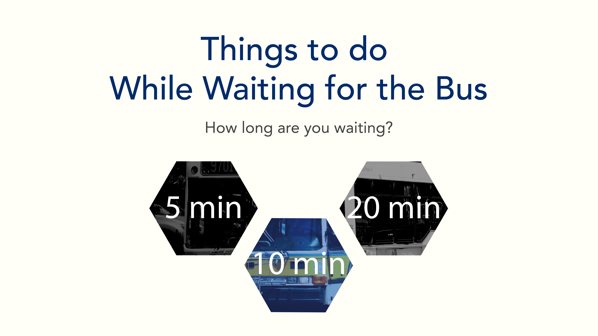

This website serves to suggest alternative activities to do while waiting for the bus. It was created in collaboration with Melvin Chen for our 5D Fundamentals final project.
View the full website here or click on any of the buses.
In our 5D Fundamentals class, we partnered with the Mayor's Office of New Urban Mechanics (MONUM) for the semester to re-imagine the space of a bus shelter. For our final project, I wanted to create something that would give bus riders a opportunity to interact with bus stops in a non-traditional way. Thus, we decided create a suggestions site for activities to do while waiting for the bus.
While researching ideas for this project, my partner and I came across several websites and articles that suggested very practical things to do while waiting for the bus such as make a to-do list, listen to an audio book, etc. Our idea was to suggest activities that were so absurd, it'd be unlikely people would really do them, but if they did, would actually activate the space in a very interesting way.
Despite being a computer science major, this was my first experience with HTML/CSS and website development. We had a lot of fun playing around with static vs. scrolling elements for our idea pages, figuring out image overlays, and positioning elements, albeit with lots of documentation reading, trial and error, and Googling.
Above are screenshots of one of our activity idea pages. The yellow box was a scrolling element, while the background with the idea was static with absolute position. This gave the idea pages a fun little sense of revealing the idea.
While I was happy with the look and feel of the idea pages, our initial homepage, shown on the right, looked quite different. The original idea was to use geometric shapes overlayed with an image of a bus, for a minimalistic look. After some deliberation and input from our classmates, we decided that this design did not fit the aesthetic of the rest of the website.
My partner and I also happened to be taking Programming Basics the same semester, so I was able to take what we learned about Processing and create an animated bus graphic in Javascript using the p5.js library. I used MBTA colors for the bus graphic to tie in the theme and our work with MONUM. This also gave our website a more cohesive look that portrayed the lighthearted attitude we wanted.